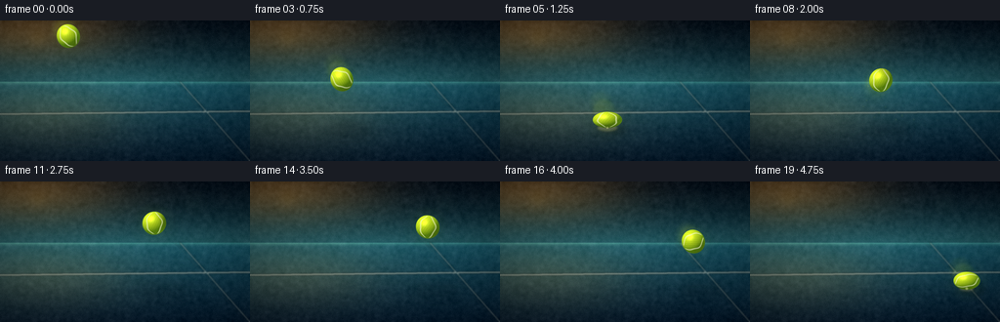
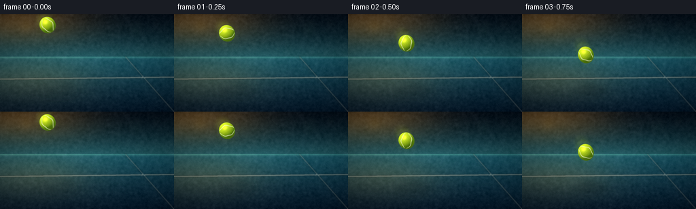

CODING AGENTS AS PIXEL WORLD MODELS
traex/DeepSeek-V4.1-Flash · phygen_028
点击播放 · 原生 RGB 像素
逐轮保存的候选
回放视频、检查图与代码变化。
每份候选均可单独播放。实际图片检查记录在下方工具轨迹中。
候选 01播放与检查图
点击播放 · 原生 RGB 像素
展开代码变化
--- 上一保存版本
+++ 本次保存版本
@@ -0,0 +1,466 @@
+"""Generate a 20-frame tennis-ball impact animation.
+
+The scene is rendered procedurally at 4x resolution, then downsampled to the
+256x144 delivery size. All motion, lighting, texture, and impact effects are
+deterministic and derived only from prompt.txt.
+"""
+
+from __future__ import annotations
+
+import math
+from pathlib import Path
+
+import numpy as np
+from PIL import Image, ImageDraw, ImageFilter
+
+import artifact_io
+
+
+CASE_DIR = Path(__file__).resolve().parent
+W, H = 256, 144
+SS = 4
+RW, RH = W * SS, H * SS
+FPS = 4.0
+NFRAMES = 20
+
+GROUND_Y = 110.0
+FIRST_IMPACT = 1.25
+SECOND_IMPACT = 4.74
+BALL_R = 12.0
+
+
+def _resize_noise(seed: int, scale: float, sigma: float = 1.0) -> np.ndarray:
+ rng = np.random.default_rng(seed)
+ small = rng.normal(0.0, 1.0, (H, W)).astype(np.float32)
+ value_range = float(np.ptp(small)) or 1.0
+ small = np.asarray(
+ Image.fromarray(((small - small.min()) * (255 / value_range)).astype(np.uint8))
+ .filter(ImageFilter.GaussianBlur(sigma))
+ .resize((RW, RH), Image.Resampling.BICUBIC),
+ dtype=np.float32,
+ )
+ small = (small - small.mean()) / (small.std() + 1e-6)
+ return small * scale
+
+
+def make_background() -> Image.Image:
+ yy, xx = np.mgrid[0:RH, 0:RW].astype(np.float32)
+ xf = xx / (RW - 1)
+ yf = yy / (RH - 1)
+ horizon = 0.435
+
+ sky_t = np.clip(yf / horizon, 0.0, 1.0)[..., None]
+ sky_top = np.array([4, 17, 29], dtype=np.float32)
+ sky_bottom = np.array([36, 93, 102], dtype=np.float32)
+ sky = sky_top + (sky_bottom - sky_top) * (sky_t**1.35)
+
+ sun_d = np.sqrt(((xf - 0.11) * 0.95) ** 2 + ((yf - 0.055) * 1.55) ** 2)
+ sun_glow = np.exp(-((sun_d / 0.36) ** 2))[..., None]
+ sky += np.array([95, 58, 13], dtype=np.float32) * sun_glow
+
+ ground_t = np.clip((yf - horizon) / (1.0 - horizon), 0.0, 1.0)[..., None]
+ court_top = np.array([28, 96, 112], dtype=np.float32)
+ court_bottom = np.array([5, 28, 48], dtype=np.float32)
+ court = court_top + (court_bottom - court_top) * (ground_t**0.78)
+
+ left_light = np.exp(
+ -(
+ ((xf - 0.16) / 0.42) ** 2
+ + ((yf - 0.66) / 0.28) ** 2
+ )
+ )[..., None]
+ court += np.array([38, 24, 4], dtype=np.float32) * left_light
+
+ horizon_band = np.exp(-(((yf - horizon) / 0.018) ** 2))[..., None]
+ court += np.array([29, 39, 26], dtype=np.float32) * horizon_band
+
+ image = np.where((yf < horizon)[..., None], sky, court)
+ image += _resize_noise(17, 3.0, 1.2)[..., None]
+ image += _resize_noise(29, 1.2, 0.35)[..., None]
+
+ # Soft vertical bands suggest a distant fence without stealing focus.
+ fence = Image.new("RGBA", (RW, RH), (0, 0, 0, 0))
+ fd = ImageDraw.Draw(fence)
+ for x in range(0, RW, 34):
+ fd.line((x, int(0.14 * RH), x, int(horizon * RH)), fill=(185, 218, 200, 14), width=2)
+ for offset in range(-RH, RW, 48):
+ fd.line((offset, int(0.17 * RH), offset + int(0.17 * RH), int(horizon * RH)),
+ fill=(180, 218, 205, 8), width=1)
+ fd.line((0, int(0.40 * RH), RW, int(0.40 * RH)), fill=(195, 226, 211, 17), width=3)
+ fence = fence.filter(ImageFilter.GaussianBlur(2.0 * SS))
+
+ # A few dim, warm stadium lights become restrained bokeh.
+ bokeh = Image.new("RGBA", (RW, RH), (0, 0, 0, 0))
+ bd = ImageDraw.Draw(bokeh)
+ lights = [
+ (0.15, 0.12, 0.047, (255, 194, 86, 35)),
+ (0.24, 0.07, 0.029, (255, 224, 145, 31)),
+ (0.78, 0.16, 0.040, (157, 220, 175, 19)),
+ (0.90, 0.10, 0.025, (255, 202, 105, 22)),
+ (0.67, 0.32, 0.019, (160, 230, 196, 17)),
+ ]
+ for cx, cy, rad, color in lights:
+ x, y = cx * RW, cy * RH
+ r = rad * RW
+ bd.ellipse((x - r, y - r, x + r, y + r), fill=color)
+ bokeh = bokeh.filter(ImageFilter.GaussianBlur(7.0 * SS))
+
+ base = Image.fromarray(np.clip(image, 0, 255).astype(np.uint8)).convert("RGBA")
+ base = Image.alpha_composite(base, fence)
+ base = Image.alpha_composite(base, bokeh)
+
+ lines = Image.new("RGBA", (RW, RH), (0, 0, 0, 0))
+ ld = ImageDraw.Draw(lines)
+
+ # Baseline behind the impact point and one receding sideline.
+ y0, y1 = int(0.665 * RH), int(0.645 * RH)
+ ld.polygon([(0, y0 - 3), (RW, y1 - 3), (RW, y1 + 4), (0, y0 + 4)],
+ fill=(236, 242, 223, 182))
+ ld.line([(int(0.72 * RW), int(horizon * RH)), (RW, RH)],
+ fill=(234, 242, 227, 122), width=6)
+ ld.line([(int(0.70 * RW), int(horizon * RH)), (int(0.985 * RW), RH)],
+ fill=(255, 255, 245, 55), width=2)
+ lines = lines.filter(ImageFilter.GaussianBlur(0.75 * SS))
+ base = Image.alpha_composite(base, lines)
+
+ # Broad, soft court reflections.
+ sheen = Image.new("RGBA", (RW, RH), (0, 0, 0, 0))
+ sd = ImageDraw.Draw(sheen)
+ sd.ellipse((-0.12 * RW, 0.55 * RH, 0.54 * RW, 0.82 * RH),
+ fill=(255, 205, 100, 19))
+ sd.ellipse((0.48 * RW, 0.54 * RH, 1.04 * RW, 0.73 * RH),
+ fill=(88, 205, 209, 16))
+ sheen = sheen.filter(ImageFilter.GaussianBlur(15.0 * SS))
+ base = Image.alpha_composite(base, sheen)
+
+ arr = np.asarray(base.convert("RGB"), dtype=np.float32)
+
+ # Lens vignette and a restrained warm/cool split.
+ vx = (xf - 0.48) / 0.66
+ vy = (yf - 0.50) / 0.70
+ vignette = np.clip(1.0 - 0.34 * (vx * vx + vy * vy) ** 0.72, 0.64, 1.0)[..., None]
+ arr *= vignette
+ arr[..., 0] += 3.0 * np.clip(1.0 - xf, 0, 1) * 0.35
+ arr[..., 2] += 2.0 * np.clip(xf, 0, 1) * 0.35
+
+ return Image.fromarray(np.clip(arr, 0, 255).astype(np.uint8)).convert("RGBA")
+
+
+def trajectory(t: float) -> tuple[float, float, float]:
+ """Return ball center x/y and vertical velocity in delivery pixels."""
+ x = 70.0 + 32.0 * t
+ if t <= FIRST_IMPACT:
+ y = 16.0 + 44.0 * t + 19.85 * t * t
+ vy = 44.0 + 39.7 * t
+ return x, y, vy
+
+ tau = t - FIRST_IMPACT
+ rebound_v = 69.3
+ y = 102.0 - rebound_v * tau + 19.85 * tau * tau
+ vy = -rebound_v + 39.7 * tau
+ if t >= SECOND_IMPACT:
+ y = 102.0
+ vy = 69.0
+ return x, y, vy
+
+
+def ball_sprite(
+ cx: float,
+ cy: float,
+ rx: float,
+ ry: float,
+ rotation: float,
+ spin: float,
+ alpha: int = 255,
+ blur: float = 0.0,
+) -> tuple[Image.Image, tuple[int, int]]:
+ pad = 4.5
+ extent = max(rx, ry) + pad
+ x0 = int(math.floor((cx - extent) * SS))
+ y0 = int(math.floor((cy - extent) * SS))
+ x1 = int(math.ceil((cx + extent) * SS))
+ y1 = int(math.ceil((cy + extent) * SS))
+ sw, sh = x1 - x0, y1 - y0
+ ys, xs = np.mgrid[0:sh, 0:sw].astype(np.float32)
+ px = (x0 + xs + 0.5) / SS
+ py = (y0 + ys + 0.5) / SS
+ dx = px - cx
+ dy = py - cy
+
+ ca, sa = math.cos(rotation), math.sin(rotation)
+ dxr = dx * ca + dy * sa
+ dyr = -dx * sa + dy * ca
+ u = dxr / rx
+ v = dyr / ry
+ rr = np.sqrt(u * u + v * v)
+ inside = rr <= 1.035
+
+ nz = np.sqrt(np.clip(1.0 - u * u - v * v, 0.0, 1.0))
+ # Rotate the normal back into screen space for stable directional light.
+ nx = u * ca - v * sa
+ ny = u * sa + v * ca
+ norm = np.sqrt(nx * nx + ny * ny + nz * nz) + 1e-6
+ nx, ny, nz = nx / norm, ny / norm, nz / norm
+
+ light = np.array([-0.50, -0.69, 0.63], dtype=np.float32)
+ light /= np.linalg.norm(light)
+ diffuse = np.clip(nx * light[0] + ny * light[1] + nz * light[2], 0.0, 1.0)
+
+ base = np.array([0.87, 0.97, 0.15], dtype=np.float32)
+ deep = np.array([0.20, 0.37, 0.025], dtype=np.float32)
+ color = deep + (base - deep) * (0.20 + 0.88 * diffuse[..., None])
+
+ half = light + np.array([0.0, 0.0, 1.0], dtype=np.float32)
+ half /= np.linalg.norm(half)
+ spec = np.clip(nx * half[0] + ny * half[1] + nz * half[2], 0.0, 1.0) ** 28
+ color += np.array([0.34, 0.31, 0.13], dtype=np.float32) * spec[..., None]
+
+ rim = np.clip(1.0 - nz, 0.0, 1.0) ** 3
+ color += np.array([0.015, 0.055, 0.055], dtype=np.float32) * rim[..., None]
+
+ # Felt-like micro texture, rotated with the ball.
+ ts = math.cos(spin)
+ tc = math.sin(spin)
+ tu = u * ts + v * tc
+ tv = -u * tc + v * ts
+ felt = (
+ 0.965
+ + 0.022 * np.sin(31.0 * tu + 17.0 * tv + spin * 1.8)
+ + 0.018 * np.sin(59.0 * tu - 23.0 * tv - spin * 1.3)
+ )
+ color *= felt[..., None]
+
+ # Two curved tennis seams. Their phase rotates with the ball's spin.
+ s = np.clip((tv + 1.0) * 0.5, 0.0, 1.0)
+ bulge = np.sin(np.pi * s) ** 0.68
+ wobble = 0.045 * np.sin(4.0 * np.pi * s + spin * 2.2)
+ curve_a = -0.64 * bulge + wobble
+ curve_b = 0.64 * bulge + 0.045 * np.sin(4.0 * np.pi * s + spin * 2.2 + 0.75)
+ seam = np.exp(-((tu - curve_a) / 0.052) ** 2)
+ seam += np.exp(-((tu - curve_b) / 0.052) ** 2)
+ seam *= np.clip((0.96 - np.abs(tv)) / 0.08, 0.0, 1.0)
+ seam = np.clip(seam, 0.0, 1.0)
+ seam_color = np.array([0.95, 0.98, 0.81], dtype=np.float32)
+ color = color * (1.0 - 0.78 * seam[..., None]) + seam_color * (0.78 * seam[..., None])
+
+ # Small contact shadow inside the lower rim gives the ball volume.
+ lower = np.clip((v - 0.35) / 0.65, 0.0, 1.0)
+ color *= (1.0 - 0.18 * lower)[..., None]
+
+ edge_alpha = np.clip((1.018 - rr) / 0.026, 0.0, 1.0)
+ edge_alpha *= inside
+ alpha_arr = edge_alpha * alpha
+
+ rgba = np.zeros((sh, sw, 4), dtype=np.uint8)
+ rgba[..., :3] = np.clip(color * 255.0, 0, 255).astype(np.uint8)
+ rgba[..., 3] = np.clip(alpha_arr, 0, 255).astype(np.uint8)
+ sprite = Image.fromarray(rgba, "RGBA")
+ if blur > 0:
+ sprite = sprite.filter(ImageFilter.GaussianBlur(blur * SS))
+ return sprite, (x0, y0)
+
+
+def paste_ball(base: Image.Image, args: tuple, alpha: int = 255, blur: float = 0.0) -> None:
+ sprite, (x0, y0) = ball_sprite(*args, alpha=alpha, blur=blur)
+ base.alpha_composite(sprite, (x0, y0))
+
+
+def add_shadow(base: Image.Image, cx: float, cy: float, rx: float, ry: float) -> None:
+ height = max(0.0, GROUND_Y - (cy + ry))
+ spread = 1.0 + height / 76.0
+ srx = rx * 1.18 * spread
+ sry = max(2.1, srx * 0.245)
+ alpha = int(np.clip(92.0 - height * 0.62, 11.0, 94.0))
+ sx = cx + 5.0 + height * 0.10
+ sy = GROUND_Y + 2.0
+
+ layer = Image.new("RGBA", (RW, RH), (0, 0, 0, 0))
+ draw = ImageDraw.Draw(layer)
+ box = ((sx - srx) * SS, (sy - sry) * SS, (sx + srx) * SS, (sy + sry) * SS)
+ draw.ellipse(box, fill=(0, 8, 12, alpha))
+ core_alpha = int(alpha * 0.42)
+ core_rx, core_ry = srx * 0.62, sry * 0.55
+ draw.ellipse(
+ ((sx - core_rx) * SS, (sy - core_ry) * SS, (sx + core_rx) * SS, (sy + core_ry) * SS),
+ fill=(0, 3, 7, core_alpha),
+ )
+ layer = layer.filter(ImageFilter.GaussianBlur((3.2 + height * 0.055) * SS))
+ base.alpha_composite(layer)
+
+
+def add_ball_light(base: Image.Image, cx: float, cy: float, rx: float, ry: float) -> None:
+ layer = Image.new("RGBA", (RW, RH), (0, 0, 0, 0))
+ draw = ImageDraw.Draw(layer)
+ gx, gy = rx * 1.55, ry * 1.55
+ draw.ellipse(
+ ((cx - gx) * SS, (cy - gy) * SS, (cx + gx) * SS, (cy + gy) * SS),
+ fill=(190, 240, 44, 13),
+ )
+ layer = layer.filter(ImageFilter.GaussianBlur(6.0 * SS))
+ base.alpha_composite(layer)
+
+
+def impact_layer(cx: float, age: float, strength: float = 1.0) -> Image.Image:
+ layer = Image.new("RGBA", (RW, RH), (0, 0, 0, 0))
+ if age < 0.0 or age > 1.05:
+ return layer
+
+ draw = ImageDraw.Draw(layer)
+ fade = max(0.0, 1.0 - age / 1.05)
+ ring_r = (6.0 + 55.0 * age) * strength
+ ring_ry = (1.8 + 13.0 * age) * strength
+ ring_alpha = int(118 * fade * fade)
+ width = max(1, int((1.25 - 0.65 * age) * SS))
+ box = ((cx - ring_r) * SS, (GROUND_Y + 1 - ring_ry) * SS,
+ (cx + ring_r) * SS, (GROUND_Y + 1 + ring_ry) * SS)
+ draw.ellipse(box, outline=(255, 247, 188, ring_alpha), width=width)
+
+ if age < 0.52:
+ inner_r = (5.0 + 24.0 * age) * strength
+ inner_ry = (1.5 + 5.0 * age) * strength
+ draw.ellipse(
+ ((cx - inner_r) * SS, (GROUND_Y - inner_ry) * SS,
+ (cx + inner_r) * SS, (GROUND_Y + inner_ry) * SS),
+ outline=(255, 226, 117, int(90 * fade)), width=max(1, int(0.8 * SS)),
+ )
+
+ if age < 0.28:
+ flash_r = (11.0 + 20.0 * age) * strength
+ flash_ry = (4.0 + 5.0 * age) * strength
+ draw.ellipse(
+ ((cx - flash_r) * SS, (GROUND_Y - flash_ry) * SS,
+ (cx + flash_r) * SS, (GROUND_Y + flash_ry) * SS),
+ fill=(255, 238, 137, int(62 * (1.0 - age / 0.28))),
+ )
+
+ layer = layer.filter(ImageFilter.GaussianBlur(1.15 * SS))
+ return layer
+
+
+def dust_layer(cx: float, age: float, strength: float = 1.0) -> Image.Image:
+ layer = Image.new("RGBA", (RW, RH), (0, 0, 0, 0))
+ if age < 0.0 or age > 0.95:
+ return layer
+
+ draw = ImageDraw.Draw(layer)
+ rng = np.random.default_rng(4801)
+ count = 30
+ angles = rng.uniform(-0.20, math.pi + 0.20, count)
+ speeds = rng.uniform(18.0, 82.0, count)
+ sizes = rng.uniform(0.45, 1.45, count)
+ heights = rng.uniform(0.15, 1.0, count)
+ fade = max(0.0, 1.0 - age / 0.95)
+
+ for angle, speed, size, height in zip(angles, speeds, sizes, heights):
+ x = cx + math.cos(angle) * speed * age * strength
+ y = GROUND_Y - math.sin(angle) * speed * age * height - 8.0 * age * age
+ a = int(np.clip(120 * fade * (0.45 + 0.55 * height), 0, 150))
+ r = max(0.45, size * (1.0 - 0.35 * age))
+ color = (244, 246, 176, a) if (int(height * 10) % 3) else (180, 224, 86, a)
+ draw.ellipse(((x - r) * SS, (y - r) * SS, (x + r) * SS, (y + r) * SS), fill=color)
+
+ return layer.filter(ImageFilter.GaussianBlur(0.45 * SS))
+
+
+def motion_trail(base: Image.Image, t: float, spin: float) -> None:
+ x, y, _ = trajectory(t)
+ for idx, dt in enumerate((0.095, 0.185)):
+ tx, ty, _ = trajectory(t - dt)
+ if t <= FIRST_IMPACT and ty < 8.0:
+ continue
+ # The ball is too slow around the apex to need a visible trail.
+ speed = math.hypot(x - tx, y - ty) / dt
+ if speed < 42.0:
+ continue
+ alpha = 20 - idx * 7
+ stretch = 1.0 + min(0.10, speed / 1550.0)
+ rotation = math.radians(-24.0)
+ args = (
+ tx,
+ ty,
+ BALL_R / stretch,
+ BALL_R * stretch,
+ rotation,
+ spin - dt * 7.0,
+ )
+ paste_ball(base, args, alpha=alpha, blur=1.2 + idx * 0.55)
+
+
+def render_frame(background: Image.Image, index: int) -> Image.Image:
+ t = index / FPS
+ base = background.copy()
+ x, y, vy = trajectory(t)
+
+ # Contact shadows and ball-local bounce light.
+ add_shadow(base, x, y, BALL_R, BALL_R)
+ add_ball_light(base, x, y, BALL_R, BALL_R)
+
+ first_age = t - FIRST_IMPACT
+ second_age = t - SECOND_IMPACT
+ if -0.01 <= first_age <= 1.05:
+ base.alpha_composite(impact_layer(x, first_age, 1.0))
+ if -0.01 <= second_age <= 0.35:
+ base.alpha_composite(impact_layer(x, second_age, 0.72))
+
+ motion_trail(base, t, spin=t * 7.5)
+
+ rx, ry = BALL_R, BALL_R
+ rotation = 0.0
+
+ if index == 5:
+ # Maximum squash at the first contact.
+ rx, ry = 15.0, 8.2
+ y = 101.8
+ elif index == 6:
+ # The stretched rebound immediately after compression.
+ rx, ry = 10.1, 14.0
+ rotation = math.radians(-8.0)
+ elif index == 19:
+ # The ball returns to the court at the end of the shot.
+ rx, ry = 13.6, 9.1
+ y = 101.7
+ else:
+ vx = 32.0
+ speed = math.hypot(vx, vy)
+ stretch = 1.0 + min(0.085, speed / 1900.0)
+ rx, ry = BALL_R / stretch, BALL_R * stretch
+ angle = math.atan2(vy, vx)
+ rotation = angle - math.pi * 0.5
+
+ spin = t * 7.5
+ paste_ball(base, (x, y, rx, ry, rotation, spin), alpha=255)
+
+ # A very thin warm rim light separates the lower edge from the blue court.
+ rim = Image.new("RGBA", (RW, RH), (0, 0, 0, 0))
+ rd = ImageDraw.Draw(rim)
+ rd.arc(
+ ((x - rx * 1.01) * SS, (y - ry * 1.01) * SS,
+ (x + rx * 1.01) * SS, (y + ry * 1.01) * SS),
+ start=18, end=162, fill=(255, 230, 108, 32), width=max(1, int(0.55 * SS)),
+ )
+ rim = rim.filter(ImageFilter.GaussianBlur(0.45 * SS))
+ base.alpha_composite(rim)
+
+ if -0.01 <= first_age <= 0.95:
+ base.alpha_composite(dust_layer(x, first_age, 1.0))
+ if -0.01 <= second_age <= 0.25:
+ base.alpha_composite(dust_layer(x, second_age, 0.62))
+
+ final = base.convert("RGB").resize((W, H), Image.Resampling.LANCZOS)
+ arr = np.asarray(final, dtype=np.float32)
+ # Fine grain keeps the downsampled render from looking plastic.
+ rng = np.random.default_rng(9000 + index)
+ arr += rng.normal(0.0, 0.85, arr.shape[:2])[..., None]
+ arr = np.clip(arr, 0, 255).astype(np.uint8)
+ return Image.fromarray(arr, "RGB")
+
+
+def main() -> None:
+ background = make_background()
+ frames = [np.asarray(render_frame(background, i), dtype=np.uint8) for i in range(NFRAMES)]
+ artifact_io.save(frames, CASE_DIR)
+ print(f"Saved {len(frames)} frames to {CASE_DIR}")
+
+
+if __name__ == "__main__":
+ main()
候选 02播放与检查图
点击播放 · 原生 RGB 像素


展开代码变化
--- 上一保存版本
+++ 本次保存版本
@@ -232,7 +232,7 @@
# Two curved tennis seams. Their phase rotates with the ball's spin.
s = np.clip((tv + 1.0) * 0.5, 0.0, 1.0)
- bulge = np.sin(np.pi * s) ** 0.68
+ bulge = np.clip(np.sin(np.pi * s), 0.0, 1.0) ** 0.68
wobble = 0.045 * np.sin(4.0 * np.pi * s + spin * 2.2)
curve_a = -0.64 * bulge + wobble
curve_b = 0.64 * bulge + 0.045 * np.sin(4.0 * np.pi * s + spin * 2.2 + 0.75)
@@ -254,7 +254,7 @@
rgba = np.zeros((sh, sw, 4), dtype=np.uint8)
rgba[..., :3] = np.clip(color * 255.0, 0, 255).astype(np.uint8)
rgba[..., 3] = np.clip(alpha_arr, 0, 255).astype(np.uint8)
- sprite = Image.fromarray(rgba, "RGBA")
+ sprite = Image.fromarray(rgba)
if blur > 0:
sprite = sprite.filter(ImageFilter.GaussianBlur(blur * SS))
return sprite, (x0, y0)
@@ -452,13 +452,19 @@
rng = np.random.default_rng(9000 + index)
arr += rng.normal(0.0, 0.85, arr.shape[:2])[..., None]
arr = np.clip(arr, 0, 255).astype(np.uint8)
- return Image.fromarray(arr, "RGB")
+ return Image.fromarray(arr)
def main() -> None:
background = make_background()
frames = [np.asarray(render_frame(background, i), dtype=np.uint8) for i in range(NFRAMES)]
artifact_io.save(frames, CASE_DIR)
+ try:
+ import imageio.v3 as iio
+
+ iio.imwrite(CASE_DIR / "video.mp4", frames, fps=FPS, codec="libx264", quality=9)
+ except (ImportError, RuntimeError):
+ pass
print(f"Saved {len(frames)} frames to {CASE_DIR}")
可观测工具轨迹
实际执行的命令与返回图片。
命令 1exit 0
/bin/bash -c "pwd && rg --files -g 'prompt.txt' -g 'GENERATION_RULES.md' -g 'task_spec.json' -g '"'!node_modules'"' -g '"'!vendor'"'"
命令 2exit 0
/bin/bash -c "ls -la && find . -maxdepth 2 -type f | sort | sed -n '1,200p'"
命令 3exit 0
/bin/bash -c 'cat prompt.txt'
命令 4exit 0
/bin/bash -c 'cat GENERATION_RULES.md'
命令 5exit 0
/bin/bash -c 'cat task_spec.json'
命令 6exit 0
/bin/bash -c "sed -n '1,240p' artifact_io.py"
命令 7exit 0
/bin/bash -c "sed -n '1,260p' player_template.html"
命令 8exit 0
/bin/bash -c "python - <<'PY'
import math
for f in range(20):
t=f/4
if t<0.84:
y=18+65*t+27.5*t*t
phase='down'
elif t<3.75:
tau=t-0.84
y=92-79.7*tau+27.5*tau*tau
phase='up'
else:
tau=t-3.75
y=92-54*tau+27.5*tau*tau
phase='up2'
print(f, t, round(y,1), phase)
PY"命令 9exit 1
/bin/bash -c 'python generate.py'
命令 10exit 1
/bin/bash -c 'python generate.py'
命令 11exit 0
/bin/bash -c 'python generate.py'
命令 12exit 0
/bin/bash -c 'file inspection.png transition_check.png frames/00.png frames/05.png && identify inspection.png transition_check.png 2>/dev/null || true'
命令 13exit 0
/bin/bash -c 'command -v chafa || command -v viu || command -v img2txt || true'
命令 14exit 0
/bin/bash -c "du -h pixels.npz index.html inspection.png && python - <<'PY'
from PIL import Image
import numpy as np
for f in [0,1,2,3,4,5,6,7,10,15,19]:
a=np.array(Image.open(f'frames/{f:02d}.png'))
print(f, a.shape, a.mean(axis=(0,1)).round(1), a.min(), a.max())
PY"命令 15exit 0
/bin/bash -c "python - <<'PY'
try:
import cv2
print('cv2', cv2.__version__)
except Exception as e: print('no cv2',e)
try:
import imageio
print('imageio', imageio.__version__)
except Exception as e: print('no imageio',e)
PY"命令 16exit 0
/bin/bash -c "python - <<'PY'
from PIL import Image
im=Image.open('inspection.png')
print(im.size)
im.resize((1024, int(im.height*1024/im.width))).save('.tmp/inspection_big.png')
PY"命令 17exit 0
/bin/bash -c "python - <<'PY'
from PIL import Image
import numpy as np
for i in [0,1,2,3,4,5,6,7,8,9,10,15,18,19]:
a=np.array(Image.open(f'frames/{i:02d}.png')).astype(float)
# neon pixels around ball
m=(a[:,:,0]>130)&(a[:,:,1]>150)&(a[:,:,2]<100)
ys,xs=np.where(m)
print(i, (round(xs.mean(),1), round(ys.mean(),1), len(xs)) if len(xs) else None)
PY"命令 18exit 0
/bin/bash -c 'python generate.py'
命令 19exit 0
/bin/bash -c "python - <<'PY'
from pathlib import Path
import json, numpy as np
from PIL import Image
p=Path('.')
s=json.loads(Path('task_spec.json').read_text())
files=sorted((p/'frames').glob('*.png'))
assert len(files)==s['frames'], len(files)
arr=np.stack([np.array(Image.open(f)) for f in files])
assert arr.shape==(s['frames'],s['height'],s['width'],3),arr.shape
assert arr.dtype==np.uint8
z=np.load('pixels.npz')['pixels']
assert z.shape==(s['height'],s['width'],s['frames'])
print('frames:',arr.shape,'npz:',z.shape,'range:',arr.min(),arr.max())
print('video:',(p/'video.mp4').stat().st_size,'bytes')
print('index:',(p/'index.html').stat().st_size,'bytes')
# Verify every saved RGB frame is represented in packed npz.
packed=(arr[:,:,:,0].astype(np.uint32)<<16)|(arr[:,:,:,1].astype(np.uint32)<<8)|arr[:,:,:,2].astype(np.uint32)
assert np.array_equal(z,packed.transpose(1,2,0))
# Per-frame image differences show actual motion rather than a static scene.
d=np.abs(arr[1:].astype(int)-arr[:-1].astype(int)).mean(axis=(1,2,3))
print('mean consecutive delta:',round(float(d.mean()),3),'min/max:',round(float(d.min()),3),round(float(d.max()),3))
PY"命令 20exit 0
/bin/bash -c "python - <<'PY'
from PIL import Image
import numpy as np
# Find bounding box of visually bright ball per frame and report contact gaps.
for i in [0,2,4,5,6,8,10,12,15,18,19]:
a=np.array(Image.open(f'frames/{i:02d}.png')).astype(int)
m=(a[:,:,0]>125)&(a[:,:,1]>145)&(a[:,:,2]<105)
y,x=np.where(m)
print(f'{i:02d}', (x.min(),y.min(),x.max(),y.max()) if len(x) else None)
PY"保存候选 2 份；完成命令 20 次；可验证图片返回 0 张。原始 API 响应与完整日志保留在本地。